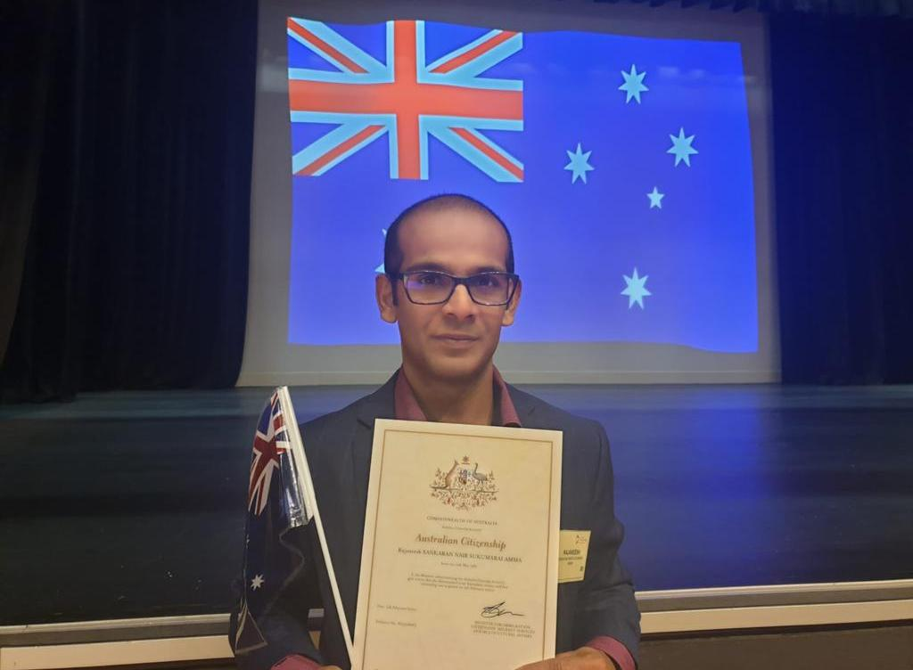

Interest
Ideal Job
Personal Profile
IT Project Idea
My Profile
My name is Rajaneesh Sankaran Nair Sukumarai Amma and l live in south-east part of Melbourne that is in Dandenong. I am a diploma holder in Mechanical Engineering and a certified Computer Numerical Control programmer (CNC). I started my career with Suzuki Motors as a Computer Numerical Control metal cutting Machine Operator (CNC Machines) in Guragaon, India. Presently I work with Australia’s most reputed recreation vehicle manufacturer - Jayco Caravans as a Team Leader.
I born and raised in India and moved to Australia in 2012. It was one my dream to become an IT professional. My lovely wife Ayswaria knows my passion and suggested me to do an undergraduate course in IT. After some deep researches, I decided to study with RMIT. I know, it will be a milestone in our life. My RMIT student ID is s3871492 and my RMIT email address is s3871492@student.rmit.edu.au
My hobbies are travelling, pencil drawing, playing chess, listening music and cruising. Best sailing we ever did was an amazing 14 nights cruising with Princess Majestic ship to Sydney from Auckland, New Zealand.

Rajaneesh Sankaran Nair Sukumarai Amma
Email : s3871492@student.rmit.edu.au
Mob : +61424441545